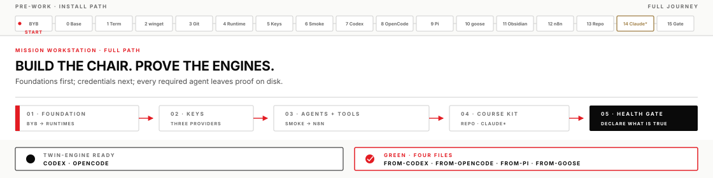
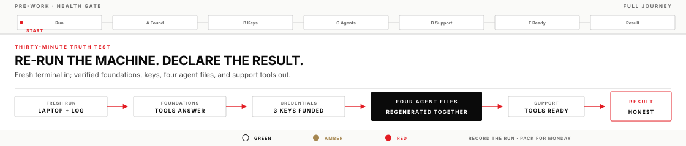

Before Monday · Student-owned install
Pre-work · Mission workstation
This module gets your Windows laptop ready for the bootcamp. You install the tools yourself — there is no golden image. Plan a focused evening or weekend block (often about 2–4 hours).

Work these in order
Read the keys reference first, then work the install checklist, then run the gate. Check items off as you execute them; progress saves in this browser.
1 · Read first
Your API keys
What a key is, which of your three drives which tool, how to store them on Windows, and what to do if one leaks. About ten minutes.
Reference page
2 · Install
Install guide checklist
Baseline → PowerShell → winget → Git → Node/Python → keys → Codex → OpenCode (Grok) → Pi → goose → Obsidian → n8n → repo → gate. Claude Code optional.
0/77 steps checked
3 · Gate
Health check gate
Re-tests everything from a fresh terminal: foundations · three keys · four regenerated agent files · supporting tools · GREEN/YELLOW/RED.
0/27 steps checked

Read the keys page Start install checklist Open health check
Done means
- Required tools installed and configured against your three API keys.
- Health check GREEN or YELLOW with a written workaround.
- All four required agents created a file in
Documents\HarnessBootcamp\prework-smoke\that you can see in Explorer. - You have a setup log with at least one real failure and fix.
Setup log (keep beside the checklists)
While you work, keep a running log (copy prework/SETUP_LOG.md or any notes file). For each major step record result, errors, fix, and time. Monday asks for this trail.
Stack at a glance
| # | Component | Notes |
|---|---|---|
| 1 | Windows 11, 64-bit | Not ARM64 — OpenCode and goose have no working ARM build |
| 2 | Git for Windows | Provides Git Bash, which Pi requires. You still work in PowerShell — Git Bash is a dependency, not a second shell to learn |
| 3 | Node.js LTS + Python | Use the OpenJS.NodeJS.LTS package id — must land in 22.22–24.x |
| 4 | PowerShell RemoteSigned | CurrentUser scope, and no Group Policy override |
| 5 | Three API keys | OpenAI · xAI · Anthropic, as Windows user variables |
| 6 | Codex | Home tool all week · needs codex login --with-api-key |
| 7 | OpenCode (Grok) | Required second engine · use the cohort-pinned version |
| 8 | Pi | Bare loop · needs Git Bash · pin the model explicitly |
| 9 | goose | From aaif-goose — not winget |
| 10 | Obsidian + n8n | Wed/Thu · both local, no subscription |
| — | Claude Code (CLI) | Optional third engine · command-line tool, not the desktop app |
Traps worth knowing before you start
These cost the most time, and none of them announce themselves clearly.
- You only ever type into PowerShell. Windows ships three terminals that look alike, and commands aren't interchangeable. Git Bash gets installed as a dependency, not as a second shell for you to learn.
- A new terminal is required after every install. A terminal reads PATH once when it opens. This is behind more "it didn't install" reports than everything else combined.
- Setting
OPENAI_API_KEYdoes not by itself authenticate Codex. It only pre-fills the sign-in screen; Codex needscodex login --with-api-keyonce. - The
.LTSsuffix on the Node package id is not optional. PlainOpenJS.NodeJSinstalls a release too new for n8n. - Installing goose with winget gets you a different program — an unrelated database tool that shares the name.
- OpenCode's
curlinstall command can't run on Windows PowerShell. It's a bash script, and no PowerShell version exists. - Pi looks for its shell only when it first needs one, so a missing Git Bash fails mid-exercise rather than at setup.
- n8n's first screen looks like a signup and isn't one — it creates a local account on your own laptop.
Markdown sources (reference)
The interactive checklists are the primary path. Raw markdown remains available if you want a printable copy: